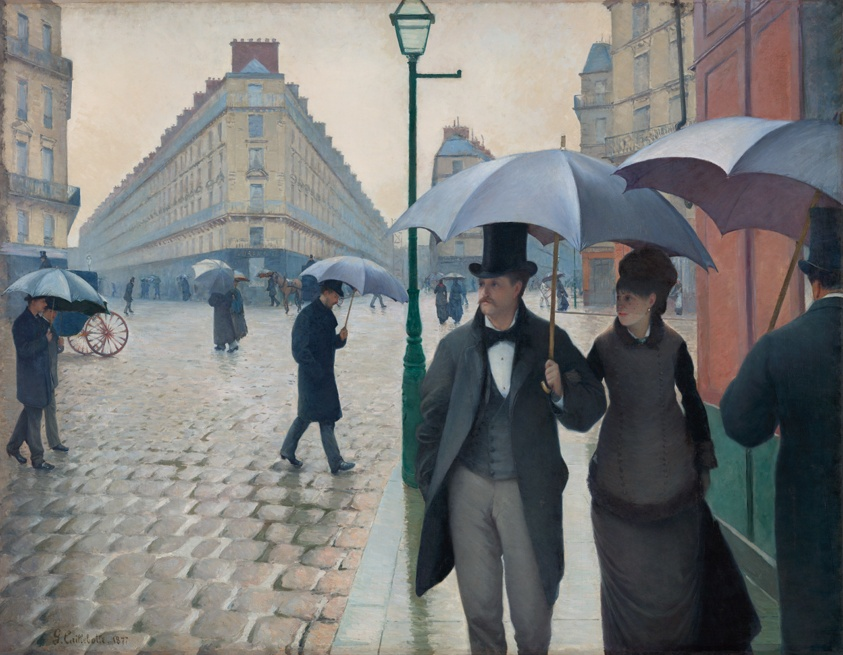
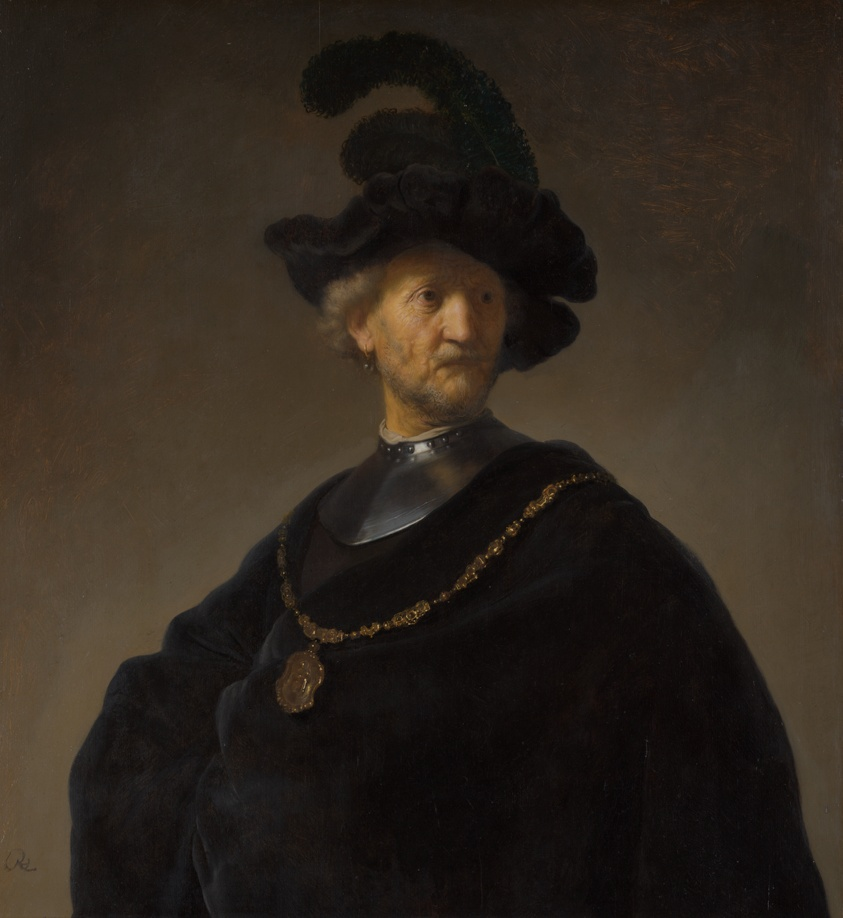
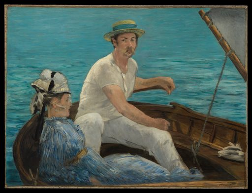
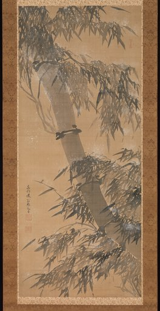
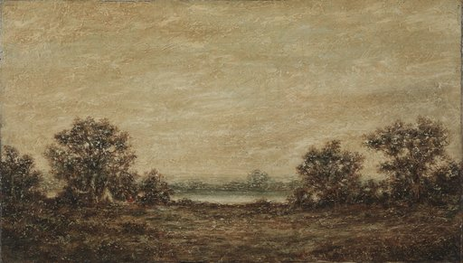
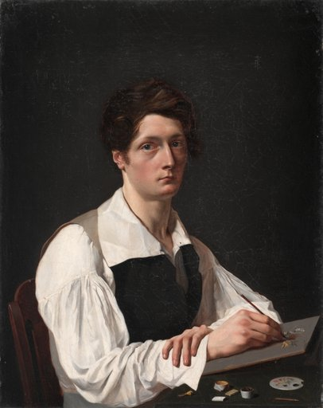
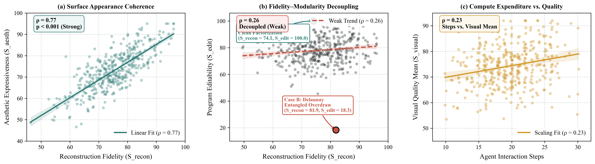
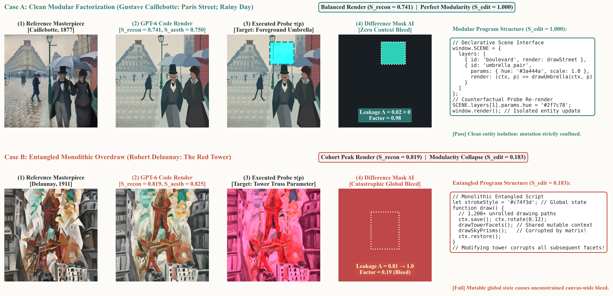

01
Paint it in code
The agent receives a public-domain masterpiece and writes a self-contained JavaScript canvas program that repaints it. The program must render offline and produce the same pixels on every run.






Apprentices learn by copying masterpieces stroke by stroke. We ask multimodal coding agents to do the same: rebuild a museum painting as a program, then check whether that program actually understands how the picture is built.
200 masterpieces · 4 museum collections · 17,323 rubric criteria
Image-to-code benchmarks grade a submission by how closely its rendering resembles the reference. That reward is just as happy with a program that memorises a snapshot, smuggles in the answer, or tangles every element into one unfactorable blob. Such a program does not paint. It replays pixels.
CLIP similarity earned by adversarial shortcut submissions that encode no structure of the painting at all.
Every shortcut is caught by the fail-closed sandbox before any quality score is computed.
Each submission is evaluated along two decoupled pillars. Visual quality is judged from the render. Program quality is measured by running the code, not by reading it.
The agent receives a public-domain masterpiece and writes a self-contained JavaScript canvas program that repaints it. The program must render offline and produce the same pixels on every run.
Every painting carries its own image-conditioned rubric tree. Fine-grained criteria from an 18-category ontology score basic visual integrity, reconstruction fidelity, and painterly aesthetics such as brushwork, lighting, and composition.
The executed editability probe applies a concrete source edit to a copy of the program, re-renders it, and measures where the pixels moved. A small, local change means the element was really there in the code.
Illustration of the probe mechanism. Both programs draw an identical scene; the difference mask is computed live from the two renders in your browser.
Frontier models evaluated through two agent harnesses, OpenAI Codex and Anthropic Claude Code. Visual dimensions are scored by an independent multimodal judge; editability comes from executed probes and is reported outside the visual score.
| Model | Harness | Basic | Recon. | Aesthetic | Editability | 4-dim mean |
|---|
Reconstruction fidelity barely predicts executed editability, while the two render-based dimensions move together at ρ = 0.77.
Across every configuration, painterly aesthetics trails basic visual integrity. Models draw outlines and fills well, but not impasto, glazing, or wash.
The same open-weight model loses almost half its 4-dimension mean when moved from the Codex harness to Claude Code.


Object-level records from four open-access museum collections, each with provenance and rights fields. Every artwork is public domain, and every case ships as a self-contained bundle.
Collections: The Cleveland Museum of Art, The Metropolitan Museum of Art, Art Institute of Chicago, Museum of New Zealand Te Papa Tongarewa.
@article{painting2code2026,
title = {Painting2Code: Can a Model Paint a Painting,
or Only Replay Its Pixels?},
author = {Anonymous},
journal = {Under review},
year = {2026}
}